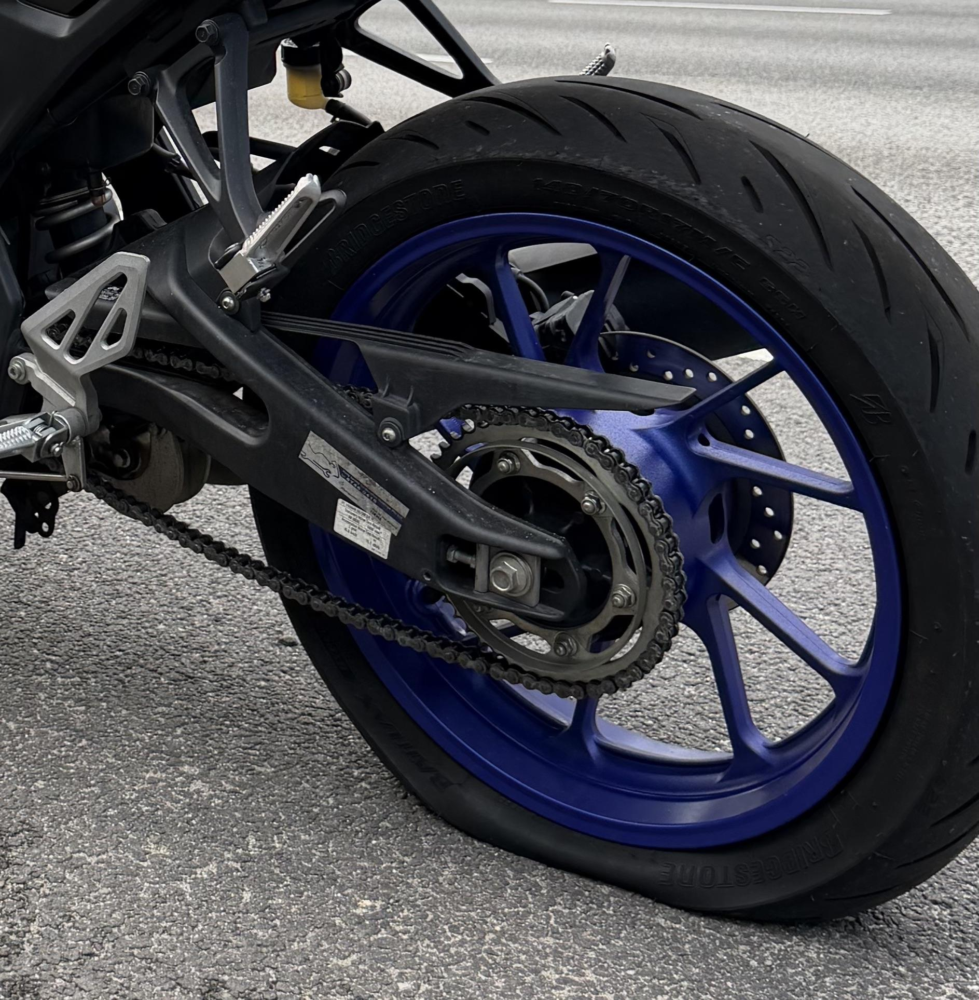

Puncture Repair
Inspect and repair suitable punctures so you can get back on the road safely.
Get reliable tyre inspections, puncture repairs and tyre replacements to keep your motorcycle safe and ready for the road.

A damaged or under-inflated tyre can affect your motorcycle's handling, braking and overall safety. Getting tyre problems checked early can help prevent further damage.
We provide puncture repairs, tyre inspections and tyre-related services for motorcycles used for daily commuting, deliveries and general riding.
Book a tyre serviceFrom small punctures to worn tyres, we help identify problems and recommend the right solution for your bike.
Inspect and repair suitable punctures so you can get back on the road safely.
Check tyres for visible damage, excessive wear, cracks and other problems.
Check tyre pressure and help ensure your tyres are inflated correctly for safe riding.
Replace tyres that are worn, damaged or no longer suitable for safe use.

Your motorcycle relies on its tyres for grip, stability and control. A damaged or badly worn tyre can affect how your bike handles, especially when braking or riding on wet roads.
Regular tyre checks can help identify problems before they leave you stranded or create a safety risk.
Don't ignore these common signs of tyre damage or wear.
Repeated punctures may indicate a tyre that is damaged or due for replacement.
Cuts, cracks, bulges or other visible damage should be inspected as soon as possible.
Excessively worn tread can reduce grip and affect handling on the road.
A tyre that repeatedly loses pressure should be checked for punctures, leaks or other problems.
We keep the process simple so you know exactly what your motorcycle needs.
We inspect the tyre and identify the cause and extent of the problem.
We explain whether the tyre can be repaired or if replacement is recommended.
Suitable punctures are repaired or damaged tyres are replaced where necessary.
We check the tyre and pressure before your motorcycle gets back on the road.
Pricing depends on the type of tyre service required. Puncture repairs, tyre replacements and additional work may be priced differently.
Bring your motorcycle in for a tyre inspection or puncture repair and get back on the road safely.